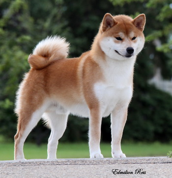
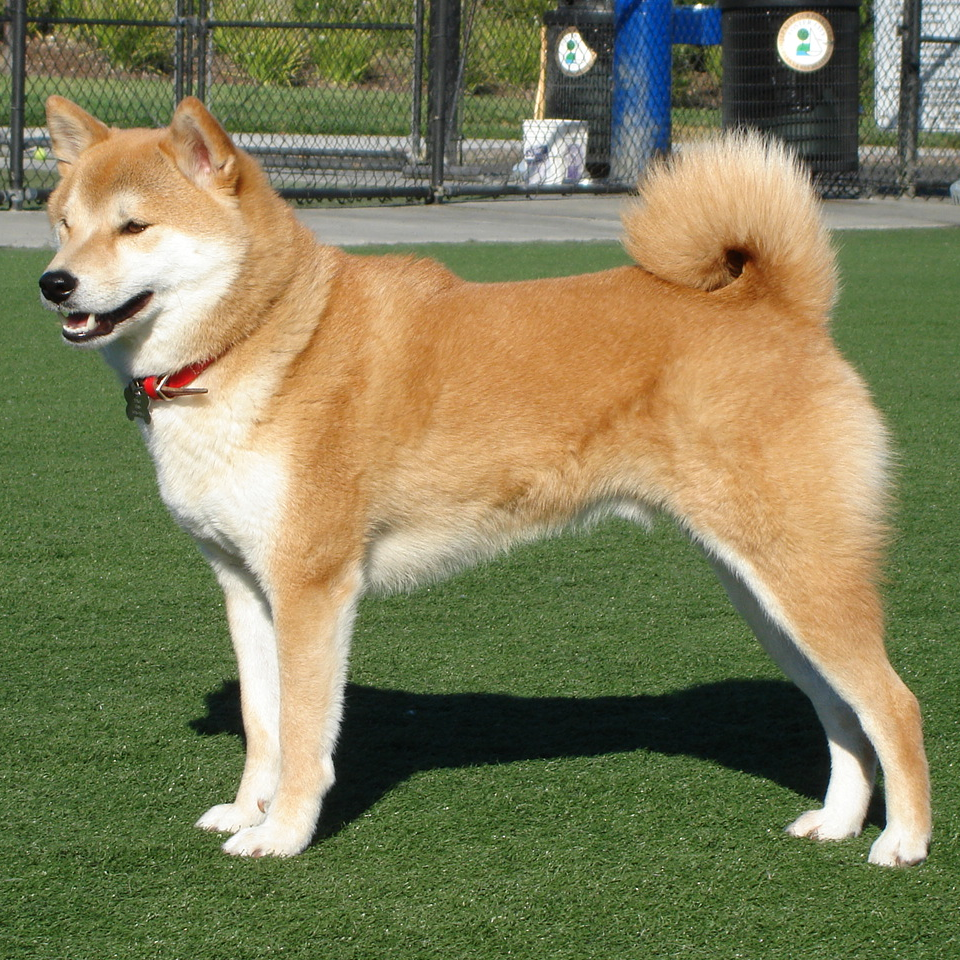
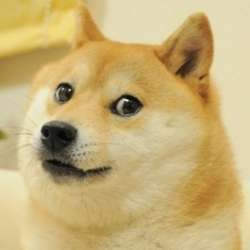
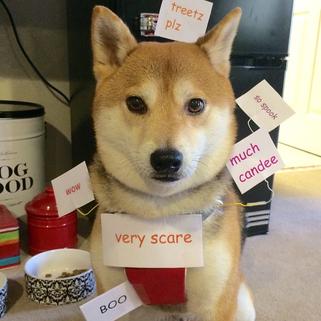
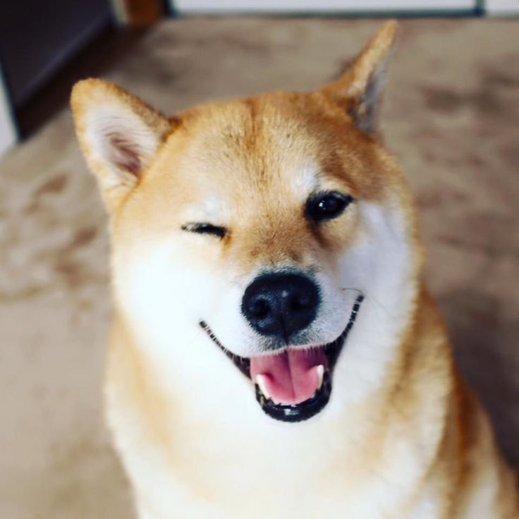
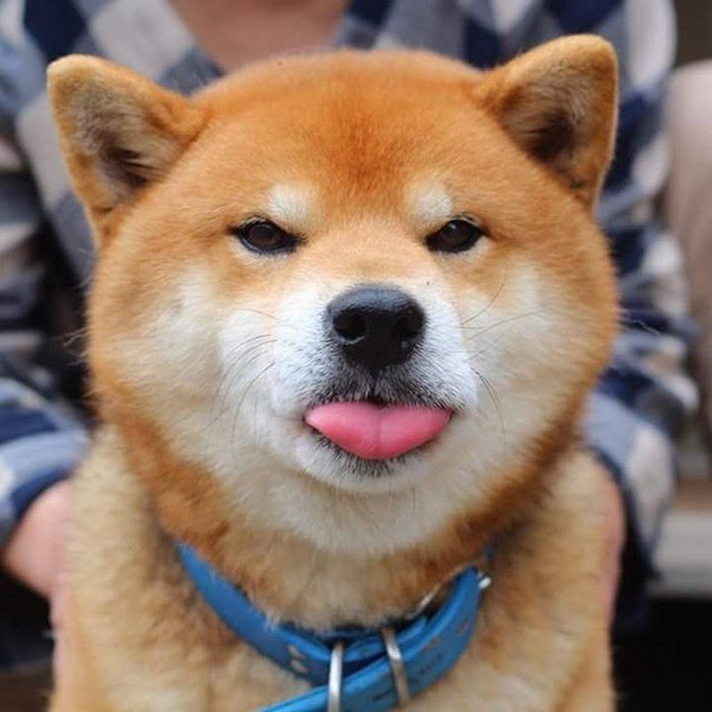
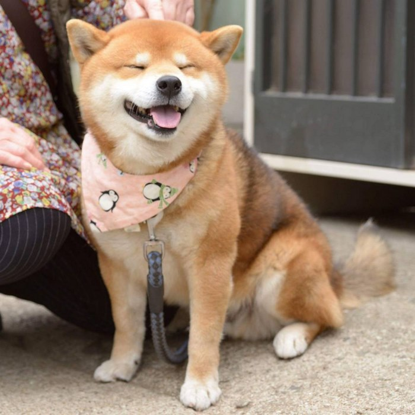
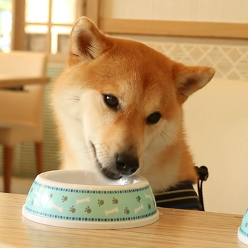

-
 Név jelentése
Az inu japánul kutyát jelent. A siba szó jelentése „bozót”, pontosabban olyan fa vagy bokor, mely levelei ősszel vörös színűvé válnak.
-
 Méreteik
A hímek marmagassága 35-42 cm, a nőstényeké 33-41 cm. Mindkét nem esetében az ideális magasság a skála középfoka. Csontozatuk középerős.
-
 A Meme
A shiba inu meme 2013ban lett népszerű.
-
 A Memeről
A meme a "so", "such", "many", "much", and "very" és az ezekhez passzoló angol szavakat használ. Színes Comic Sans betűtípussal.
-
 A "shiba sikoly"
Ha provokálják, vagy úgy érzik, hogy rosszul bánnak velük, akkor magas, éles hangot adnak ki. Akkor is ha megörülnek valakinek.
-
 Természetük
Kényes és büszke természetük miatt a siba kölyköket nem nehéz szobatisztaságra nevelni, sok esetben maguktól válnak azzá.
-
 Jellemük
Fegyelmezett állat annak ellenére, hogy önálló akarattal rendelkezik.
-
 Genetikájuk
A sibák remek genetikai adottságokkal rendelkeznek, ezért a genetikai betegségek náluk sokkal kevesebb, mint más kutyafajtáknál.